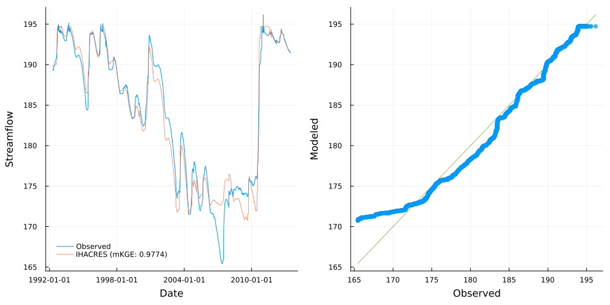

A simple example
In this example we showcase a two-node network: a gauge providing inflows into a dam.
The dam in question is Lake Eppalock, in the Lower Campaspe catchment located in North-Central Victoria, Australia.
The map below shows Lake Eppalock, along with relevant gauge locations/data (click the markers on the map to see further gauge details).
This example uses the results as detailed in Calibration setup.
"""
This script is run in the `examples` directory.
"""
using CSV, DataFrames, YAML
using StatsPlots
using Streamfall
data_dir = joinpath(dirname(dirname(pathof(Streamfall))), "test/data/campaspe")
# Load climate data - in this case from a CSV file with data for all nodes.
# Indicate which columns are precipitation and evaporation data based on partial identifiers
climate = Climate(joinpath(data_dir, "climate/climate.csv"), "_rain", "_evap")
calib_data = CSV.read(
joinpath(data_dir, "gauges/outflow_and_level.csv"),
DataFrame;
comment="#"
)
# Historic extractions from the dam
extraction_data = CSV.read(joinpath(data_dir, "gauges/dam_extraction.csv"), DataFrame; comment="#")
# Load the two-node example network
sn = load_network("Example Network", joinpath(data_dir, "two_node_network.yml"))
# Run the dam node and above
dam_id, dam_node = sn["406000"]
run_node!(sn, dam_id, climate; extraction=extraction_data)
# Get performance metrics
dam_obs = calib_data[:, "406000"]
dam_sim = dam_node.level
rmse_score = Streamfall.RMSE(dam_obs, dam_sim)
nnse_score = Streamfall.NNSE(dam_obs, dam_sim)
nse_score = Streamfall.NSE(dam_obs, dam_sim)
rmse = round(rmse_score, digits=4)
nnse = round(nnse_score, digits=4)
nse = round(nse_score, digits=4)
@info "Scores:" rmse nnse nse
# Results of model run
quickplot(dam_obs, dam_sim, climate; label="IHACRES", log=false, burn_in=366)The quickplot() function creates the figure displayed above which shows dam levels on the left (observed and modelled) with a Q-Q plot on the right.

sim_dates = Streamfall.timesteps(climate)
Streamfall.temporal_cross_section(sim_dates, calib_data[:, "406000"], dam_sim)The above shows a "cross-section" of model predictions for each month-day across simulation time. It is useful to gain an understanding on when models may underperform and give a sense of a models predictive uncertainty. The units of the y-axis are the same as for the node (in this case, meters).
Ideally, the median error would be a straight line and the confidence intervals would be as thin and consistent as possible for all month-days.
Here, we see that while performance is generally good (mean of Median Error is near zero), the model can under-estimate dam levels in late-April to May and displays a tendency to over-estimate dam levels between January and June, relative to other times.